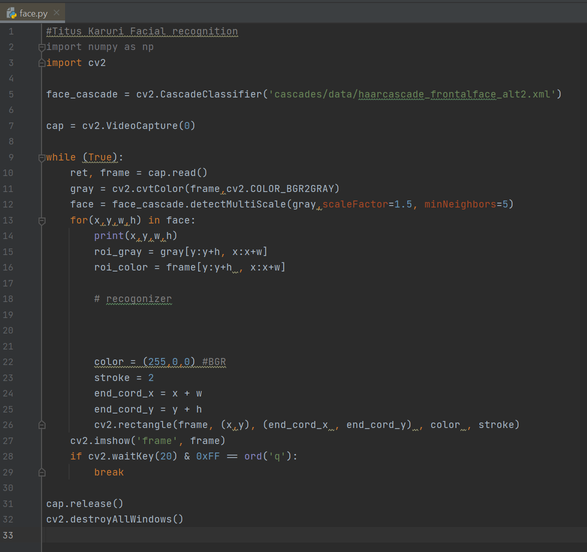

My Projects

Uses a webcam and OpenCV to develop a facial recognition system which identifies a specific fce among a variety of faces.
-

- Implements Haar Cascades library in Python,Object detection algorithm used to identify faces in an image or real time video.
- This resulted in a face being identified with a square box being drawn around the face.
Rover
Developed a Verilog project that took a Basys FPGA board and L298 H-Bridge and made a rover dcmotor spin in both directions with variable speeds that can be set with switches.